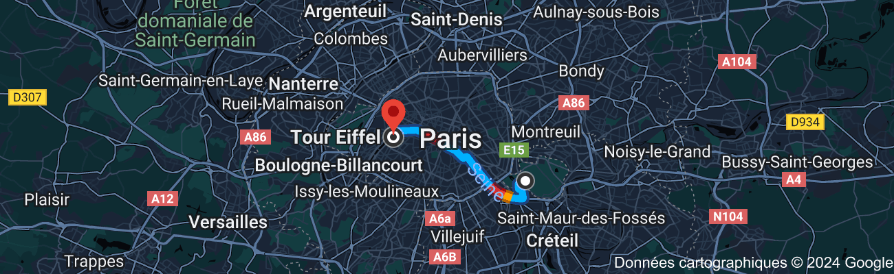

Ce monument au coeur du pays du romantisme a été construite au centre de Paris pour l'exposition universelle de 1889. Faite en fer puddlé, elle meusure 330m de haut!
Elle est classé comme patrimoine nationnal et elle comptabilise en moyenne 7milions de visiteurs tout les ans ce qui en fait l'un des monuments les plus visités au monde.
Depuis la tour, vous pourrez aller facilement jusqu'a la cathédrale de Notre Dame de Paris pour ce faire vous passerez près de l'hôtel des invalide ainsi que le musée du Louvre et le pont Neuf.
